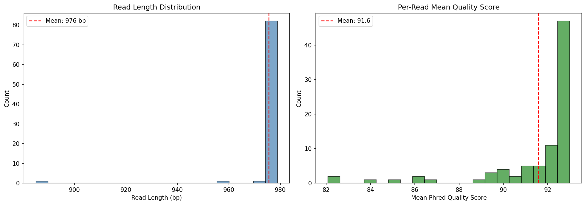
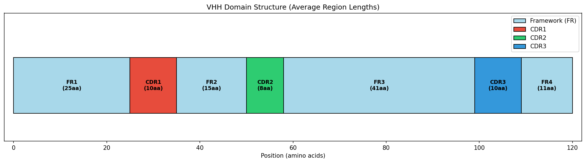
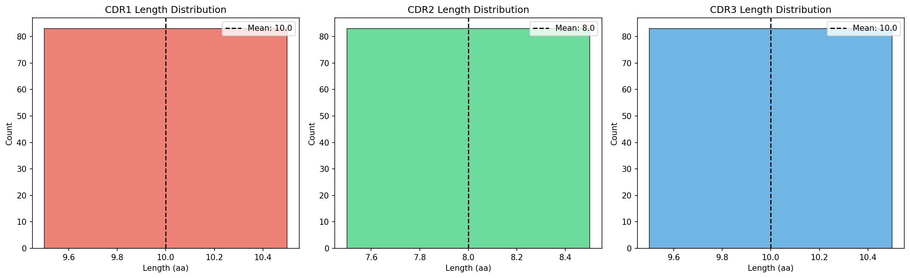
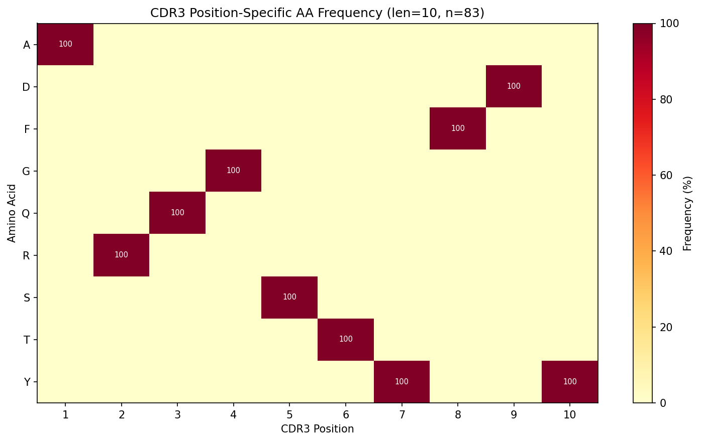
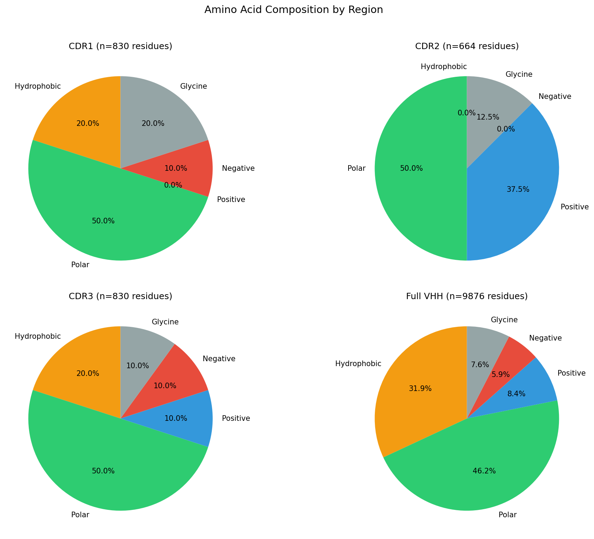
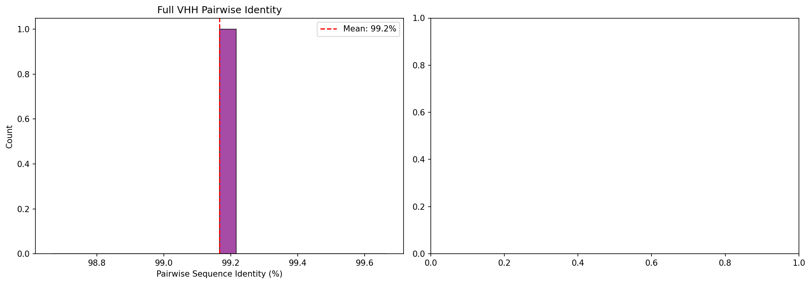
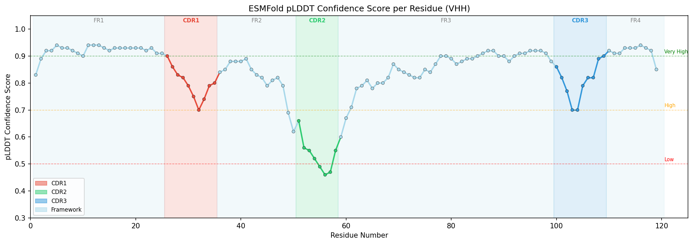
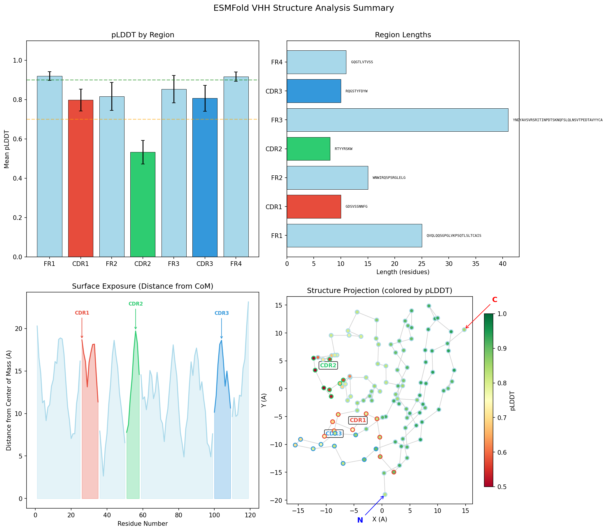
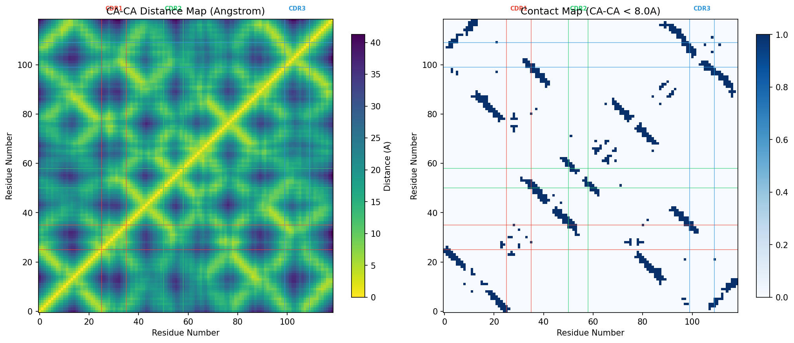
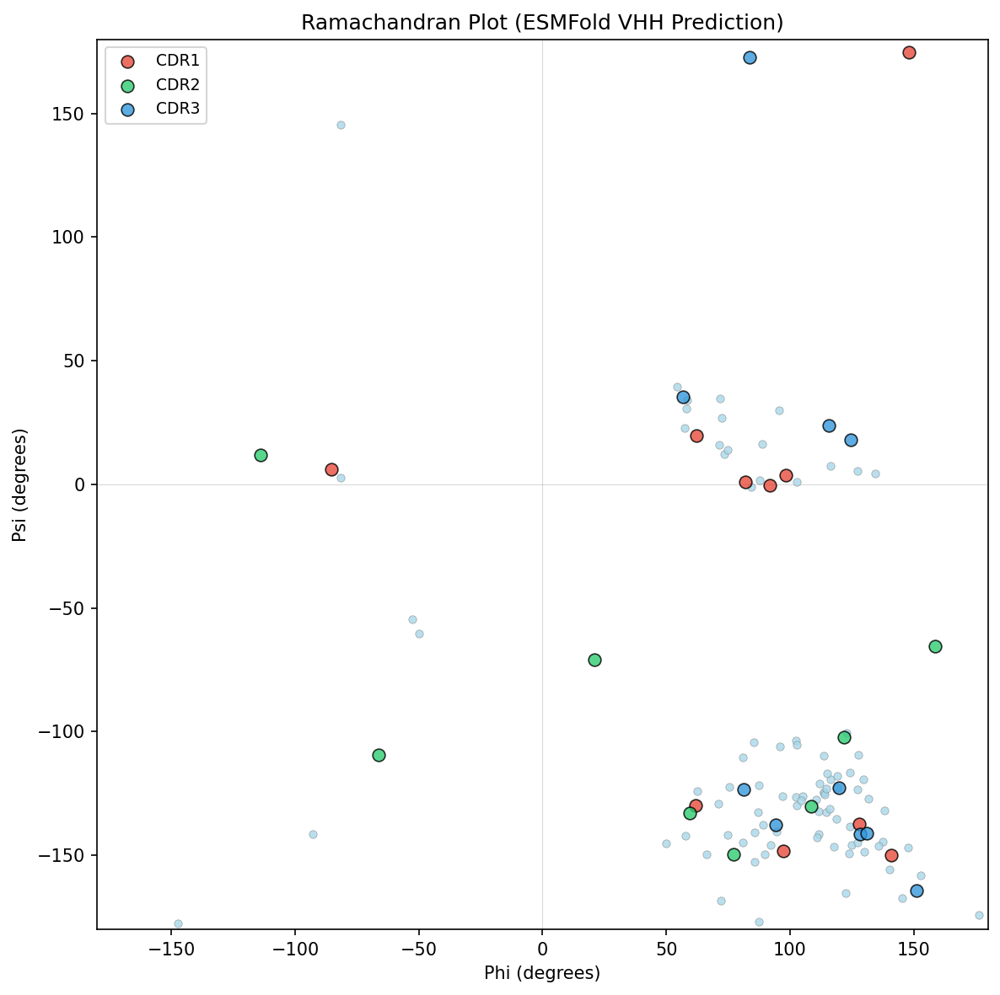

PacBio CCS 나노바디 시퀀싱 데이터의 완전한 생명정보학 파이프라인 — 원시 FASTQ에서 ESMFold 3D 구조 예측까지
파지 디스플레이 라이브러리의 단일 클론 나노바디 시퀀싱을 처음부터 끝까지 분석합니다.
PacBio CCS는 평균 Q92의 거의 완벽한 정확도를 제공합니다.

모티프 기반 추출로 파지 디스플레이 벡터의 amber 종결 코돈을 처리합니다.
QVQL...WGQG)를 검색하고, 내부 종결 코돈을 X로 치환합니다.
3개의 CDR 루프가 나노바디의 항원 결합면(파라토프)을 형성합니다.
| 영역 | 길이 | 서열 | 역할 |
|---|---|---|---|
| FR1 | 25 aa | QVQLQQSGPGLVKPSQTLSLTCAIS | 구조적 골격 |
| CDR1 | 10 aa | GDSVSSNNFG | 항원 접촉 |
| FR2 | 15 aa | WNWIRQSPSRGLEXL | 골격 (X = amber stop) |
| CDR2 | 8 aa | GRTYYRSK | 항원 접촉 |
| FR3 | 41 aa | WYNDYAVSVRSRITINPDTSKNQFSLQLNSVTPEDTAVYYC | 구조적 골격 |
| CDR3 | 10 aa | ARQGSTYFDY | 항원 특이성 핵심 |
| FR4 | 11 aa | WGQGTLVTVSS | 구조적 골격 |


매우 낮은 다양성은 라이브러리 스크리닝이 아닌 단일 클론 검증임을 확인합니다.


인간 germline을 참조로 한 V(D)J 재조합 할당.
| 영역 | 길이 | 일치 | 불일치 | 동일성 |
|---|---|---|---|---|
| FR1-IMGT | 75 nt | 75 | 0 | 100.0% |
| CDR1-IMGT | 30 nt | 26 | 4 | 86.7% |
| FR2-IMGT | 51 nt | 50 | 1 | 98.0% |
| CDR2-IMGT | 27 nt | 27 | 0 | 100.0% |
| FR3-IMGT | 114 nt | 112 | 2 | 98.2% |
| CDR3-IMGT | 6 nt | 6 | 0 | 100.0% |
| 합계 | 303 nt | 296 | 7 | 97.7% |
Meta의 ESMFold 언어 모델로 예측된 높은 신뢰도의 단백질 구조.
드래그로 회전, 스크롤로 확대/축소, 우클릭으로 이동. 버튼으로 색상 모드를 전환하세요.

| 영역 | 평균 pLDDT | 신뢰도 | |
|---|---|---|---|
| FR1 | 0.920 | 매우 높음 | |
| CDR1 | 0.798 | 높음 | |
| FR2 | 0.816 | 높음 | |
| CDR2 | 0.532 | 낮음 | |
| FR3 | 0.853 | 높음 | |
| CDR3 | 0.807 | 높음 | |
| FR4 | 0.917 | 매우 높음 |
| CDR | 서열 | End-to-End 거리 | 백본 길이 | 밀집도 |
|---|---|---|---|---|
| CDR1 | GDSVSSNNFG | 15.0 A | 34.1 A | 0.44 |
| CDR2 | RTYYRSKW | 9.7 A | 26.4 A | 0.37 |
| CDR3 | RQGSTYFDYW | 6.5 A | 34.2 A | 0.19 (촘촘한 루프) |



분석 과정에서 실제로 발생한 문제와 해결 방법.
curl: (56) OpenSSL SSL_read: error:0A000126curl -k로 SSL 검증 우회.QVQL...WGQG) 사용. 내부 *를 X로 치환.BLAST Database error: No alias or index file found for [human_gl_D]makeblastdb로 BLAST DB 구축.curl이 IMGT에서 FASTA 대신 HTML을 반환.전체 코드와 설명이 포함된 단계별 상세 튜토리얼.